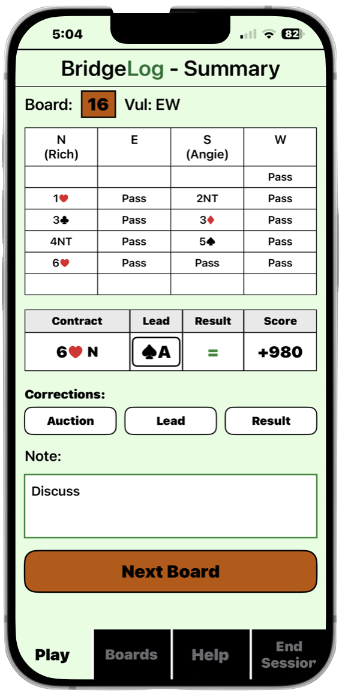
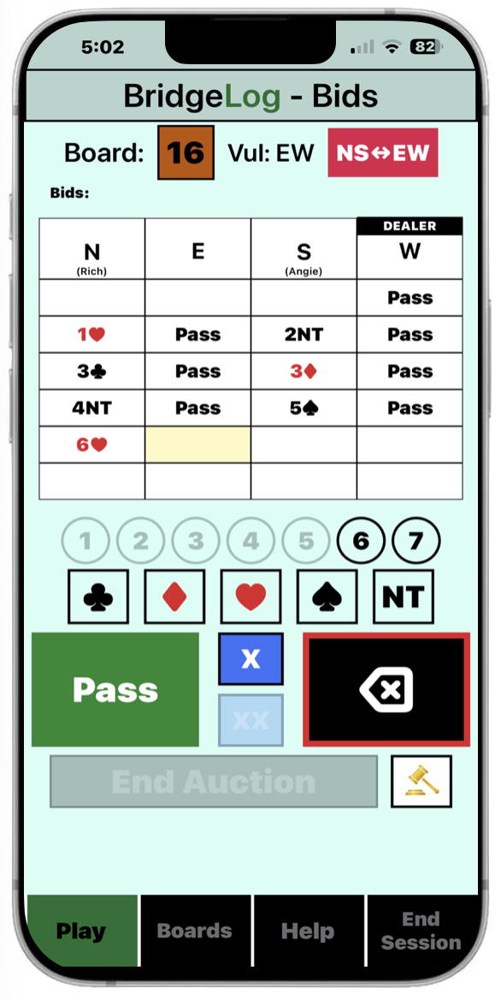
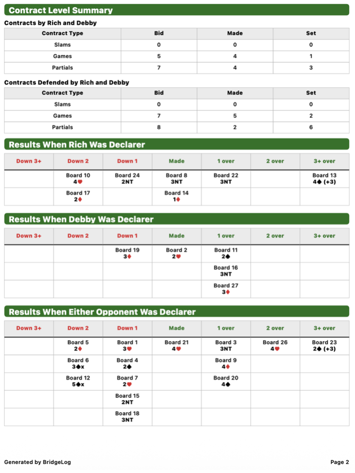

01
Legal bidding guidance
BridgeLog ensures that the bids you enter are legal.
The digital scoresheet for duplicate bridge players
BridgeLog replaces your paper scoresheet with a fast, easy-to-use iPhone app that records the auction, opening lead, result, and notes for every board you play.


Replace cumbersome scoresheets
No more paper and broken pencils.
No more coffee stains.
No more unreadable handwritten notes.
BridgeLog is a fast, easy-to-use iPhone app that records the auction, opening lead, result, and notes for every board you play.
Analyze every session
BridgeLog automatically creates detailed session reports so you and your partner can review your performance, identify opportunities for improvement, and become better players.
Reports can be viewed or shared in email, PDF, and Excel formats.

Built for real duplicate bridge
BridgeLog ensures that the bids you enter are legal.
Allows recording of director-approved irregular bids.
Displays information from earlier boards when needed during the session.
BridgeLog for iPhone
BridgeLog is being prepared for beta testing and future release in the App Store.